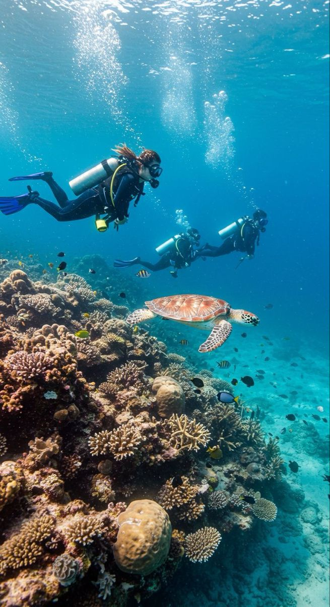
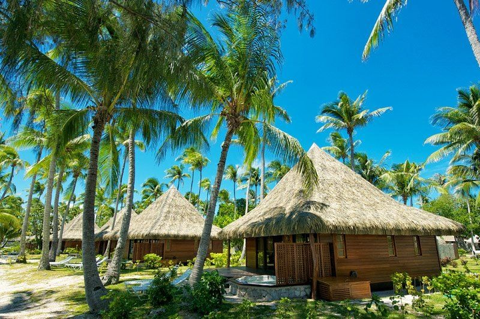
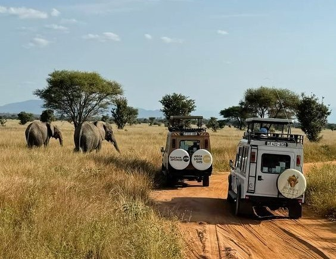
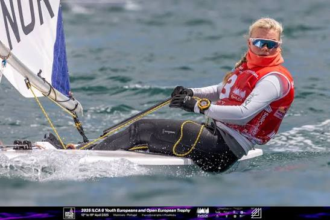
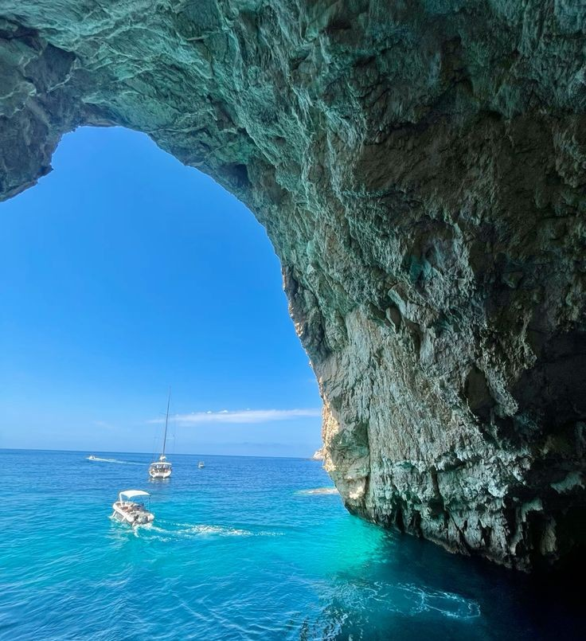
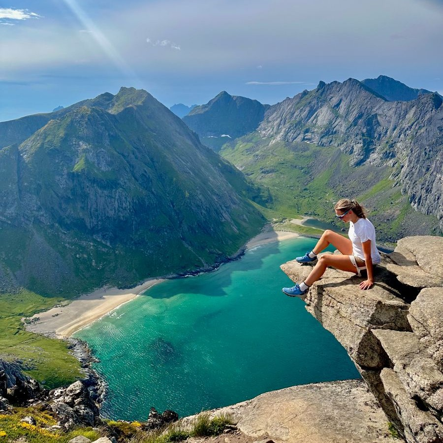
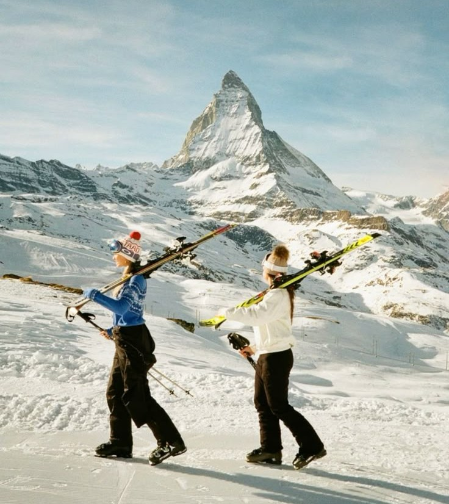

Dykking i Koh Tao, Thailand
Koh Tao i Thailand bør være på listen over steder alle dykkere må besøke. Vanntemperaturen rundt Koh Tao er vanligvis mellom 27 og 30 grader Celsius i gjennomsnitt, som gjør det til et perfekt sted for dykking hele året. Øya er omgitt av et korallrev-økosystem som gir dykkere et mangfold av fantastisk marint liv.

Her har vi base i flotte bungalower nede ved stranden. Her kan nyte sjøluften og de flotte sol ned/opp- gangenen!

Safari i Serengeti, Afrika
Serengeti er for mange selve drømmen om Afrika. Endeløse savanner, store løveflokker og den spektakulære migrasjonen, hvor over to millioner gnuer og sebraer vandrer mellom Serengeti og Masai Mara på jakt etter grønnere beitemarker, gjør nasjonalparken til et av verdens mest berømte naturområder. Med sitt rike dyreliv og enorme landskap byr Serengeti på safariopplevelser som er vanskelige å finne maken til.

Seiling i Vilamoura, Portugal.
Vilamoura på Algarvekysten i Portugal er et fantastisk sted for seiling, med Marina de Vilamoura som det naturlige sentrum for både turseilere og profesjonelle lag. Du kan bli med på guidede seilturer, solnedgangsturer (sunset sailing) eller halvdagsturer langs kysten. Mange turer inkluderer vinsmaking eller enkel mat om bord. Eller så kan du prøve ut Vilamoura Sailing Centre, som er et verdenskjent treningssenter for konkurranseseiling. Senteret har fasiliteter som båtpark, direkte utsettingsramp og flåter med blant annet 470-, ILCA- og J/70-båter.

Reise til blue cawes, kysten av Zakynthos, Hellas
Hvis du ønsker å få mer ut av din tid i Hellas, så er dette turen for deg. Bytt overfylte bussturer for en naturskjønn båttur over den nordlige kysten av Zakynthos. Mens du drar fra Agios Nicholaos til Navagio Bay, får du tips fra mannskapet om de beste stedene å stoppe - som de spektakulære Blue Caves, og Agios Andres Bay, med sine gamle klosterruiner.

Reise til den norske fjellheim, Norge
Det er lite som slår å stå på toppen og nyte utsikten etter en lang tur, særlig en vakker sommerdag! Drømmer du om å gå Preikestolen, Besseggen eller en av de andre mest kjente fjellturene i landet?

Ski i Zermatt, Sveits
Zermatt er et bilfritt skiparadis i Sveits, plassert rett under det ikoniske fjellet Matterhorn. Her får du over 360 km med løyper og snøgaranti i opptil 3 883 meters høyde. Det unike skianlegget lar deg kjøre på ski over grensen til Italia for lunsj, før du returnerer til sveitsisk gourmet og alpesjarm om kvelden.